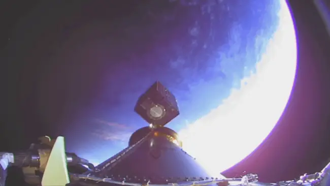
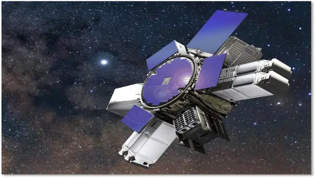
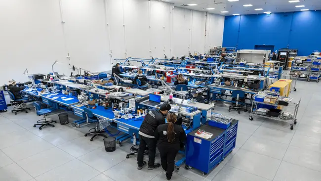

Boeing’s Quantum Leap: Satellites in Record Time, Boosting National Security and Commercial Connectivity
In 1963, Boeing heritage company Hughes Space and Communications launched into orbit a 78-pound satellite called Syncom that could receive signals from Earth and send those signals back down to different spots around the globe. That first communications satellite was built in the same El Segundo, California, facility where the Nash Rambler was built in the 1950s and where Boeing today produces satellites for commercial customers like SES and Viasat, as well as the U.S. Department of Defense (DoD). Syncom production was a ground-breaking effort that incorporated cutting edge technology of the day. Building the spacecraft took several years.
Since then, Boeing—which acquired Hughes in 2000—has been delivering satellites on faster and faster timelines; production is now tallied in months, not years. But earlier this year, when Millennium Space Systems, a Boeing Company, delivered a satellite for U.S. Space Systems Command’s Space Safari Program Office in an astounding eight months, the industry took note.

“We moved fast on VICTUS NOX by taking a vehicle off our production line that was about 65 percent complete and modifying it for the mission in eight months,” said Jason Kim, CEO of Millennium Space Systems, the Boeing subsidiary responsible for manufacturing the vehicle. “That’s not normal; the timelines are insane.” Kim said the exercise with VICTUS NOX—Latin for “conquer the night”—demonstrates the ability to tactically deploy a small satellite into orbit in record speed, a critical response if U.S. satellites are shot down or rendered inoperable in a military conflict. The satellite launched on September 14, 2023 and was operational 37 hours later, instead of weeks or months. This new record for operational readiness came after completing near back-to-back 58-hour activation and 24-hour launch phases.
“It’s the nation’s way to show everyone in the world that the U.S. Space Force can move really fast to meet an urgent need or augment a need,” Kim said. “Once it was on orbit we checked out the vehicle in hours, not weeks.” Every step of the VICTUS NOX mission is about moving extremely fast, even for Millennium—a company known for delivering operational small satellites at remarkable speed.
“When you get a production line going, you can deliver small satellites in a very quick assembly line fashion,” Kim said. “We continue to disrupt the timelines in delivering systems. Reducing the time is what drives all our people here. We have a culture of moving with speed and calculated risk.”
Kim said lessons learned with VICTUS NOX will be applied to other programs. “If we can do something fast, why not try to do that on more of our vehicles,” he said, noting that speed is not only good for staying ahead of military threats but also for any customer wanting to quickly generate data to make better informed decisions.
Boeing is ramping up to build satellites of all sizes and also is building a systemic infrastructure in which larger, more powerful satellites are much more capable and resilient. That, paired with a rich history of state-of-the-art technology and the legacy of Millennium’s rapid delivery of operational small satellites, is driving the next generation of satellite constellations. Among the most exciting new Boeing satellites is WGS-11, the latest version of the Wideband Global SATCOM satellite system, with more than double the capability of its predecessors.
For all satellite customers: “Faster, more mission-relevant solutions”
As one of the few companies in the world that offers satellite products to both commercial and national security customers, Boeing is uniquely situated to solve the problems of any satellite user in space.
“Customers turn to us because we’re not just solving today’s challenges; we’re anticipating the problems of tomorrow. Our new Space Mission Systems organization is dedicated to rapidly responding to our customers’ needs,” said Michelle Parker, vice president of Space Mission Systems at Boeing Defense, Space & Security.
“Our integrated portfolio, consolidated in 2022, spans multiple sectors of aerospace technology, allowing us to draw from a diverse range of innovations, even those outside traditional space programs, to deliver faster, more mission-relevant solutions.”
Boeing’s Space Mission Systems portfolio includes government and commercial satellite systems, as well as subsidiaries Millennium Space Systems and Spectrolab. “The beauty of our approach is that technology developed in our commercial organization benefits government programs, and vice versa. This flexibility means customers can mix and match orbits and satellites according to their unique requirements, and even have the opportunity to serve government missions,” Parker added.
Throughout its 60-year history in satellite production, Boeing has led the way as spacecraft increased in size through the 1980s and ‘90s and then as they shrank and became more capable; as they advanced from largely hardware systems to mostly software systems that include high-speed computers; and as we have moved into a world transformed by Big Data.
“It’s a long legacy that stretches pretty far back,” said Bryan “Stu” Eberhardt, director of Business Development for Space Mission Systems at Boeing, who likes to show visitors the El Segundo factory’s hall of flags—with flags from 44 countries that have bought Boeing satellites—as a reminder that space activity is international. “Satellite communication has been one of the areas we’ve never gotten away from. We have been on the cutting edge ever since Syncom, and we’ve been a provider of tactical satcom for the last couple decades.”
Through the years, customer demands have changed drastically: Today, both commercial and government users need to move an exponentially larger amount of data for their own customers and users—whether it’s for ATMs, credit cards, weather apps, video streaming or, critically, communications for the warfighter. These users all need to know that their communications and data streams won’t be interrupted by interference or electronic warfare attacks from an adversary. Commercial customers are concerned with revenue generation; government customers are dealing with life and death. But at the end of the day, all customers want quickly built satellites with increased capability, flexibility, performance and uninterrupted signals.
Whether warfighters are trying to get real-time high definition reconnaissance video as they move into harm’s way, or first responders need to connect with other humanitarian workers after a hurricane, satellite communication is vital. Anytime, anywhere assured communications means vital connectivity is going to be there, whether an adversary is trying to jam you, or ground infrastructure is wiped out, said Rico Attanasio, director of Boeing’s Tactical Military SATCOM programs. “Our job is to deliver the systems that our servicemen and women can be confident will connect them with the resources they need in the most stressing environments,” he said.
Boeing Phantom Works executive director Gil “Waco” Griffin said that with so much technology shared between commercial and government customers, the lines between those users are blurring. “Listening to the needs of our customers and policy-makers, we’re seeing a need to have capabilities more synchronized,” he said. At the same time, Boeing’s vision for a strong and effective space order of battle revolves around ensuring the availability of vital services and capabilities that give the U.S. a competitive edge in warfighting through different situations like competition, crises, and conflicts.
“One of the missions of the Department of Defense has always been to protect what’s important to us, especially in trade and commerce,” Eberhardt said. “Protecting commercial space systems is akin to protecting our trade routes in the open ocean, which led to the establishment of the Navy. DoD has recognized our reliance on space systems in daily life and said we need to continue to protect those systems and those assets. What we’re working on here at Boeing is how do we go about doing that.”
‘Flying a super computer in Space’
WGS-11, with its integrated payload array, software-defined network and anti-jam capabilities, sets a new bar for the government and warfighters,” Parker said. “Our customers are very excited about that capability.”
WGS is a constellation of communication satellites in geostationary orbit developed by Boeing to meet DoD needs and give the U.S. warfighter a competitive edge on the battlefield. The first 10 WGS satellites, starting with the first launch in 2007, serve as the backbone for the bulk of defense communications. With each new generation of WGS satellites, Boeing has leveraged state-of-the-art commercial technology, increased capability and decreased cost. The bandwidth, for instance, doubled between WGS-7 and WGS-8. But those improvements pale in comparison to the latest advances, said Eberhardt. The jump from WGS-10 to WGS-11, he said, is extraordinary. “It’s an evolutionary move, but in terms of data, it’s revolutionary. We say it’s twice the capability of WGS-10, but in some cases, it’s 10 times as much.”
WGS-11, which will be operated by the U.S. Space Force, will provide more than double the capability of its predecessors: more coverage beams, more beam-formed bandwidth and more frequency re-use than earlier systems. It will be able to move thousands of footprints of data, will incorporate a higher level of cybersecurity, will better protect the signal from jamming in a contested environment and will offer a flexible software defined payload. “We went from a digital backbone to a full digital system,” Eberhardt said, “really flying a super computer in space.”
Eberhardt, who served in the U.S. Air Force, said he has a deep understanding of what the warfighter needs in a difficult situation. “It’s tough to know what you need to do next,” he said. “You’re fighting in a complex environment that demands much more data, movement of data and protected voice and data communications. All of that in the most challenging of contested environments for decision makers.” Machine-to-machine communication will enable warfighters to make decisions with good information, he said. But that communication must protect data so it can’t be intercepted and jammed. “The more robust you can make the transfer of that data and information, and the more you can get it to the right place in a timely manner, the more you’ll help the warfighter.”
Attanasio, who manages a wide program portfolio that provides assured, secure and protected communications to the U.S. military, including WGS and PTS (Protected Tactical SATCOM), said Boeing has been working with the Space Force on rapid prototyping for the last four years. One of the questions that drives his team: “How do we leverage our best commercial technology and modify it for military use?” One way: the integrated payload array (IPA), adapted from Boeing’s commercial 702X satcom design. “We leveraged both the technology and the manufacturing processes to develop and deliver WGS-11 and PTS,” said Attanasio, “the IPA is digitally engineered and manufactured on an automated production line, and we additively manufacture most of the antennas.” Unlike the analog payloads of the ‘80s and ‘90s with fixed and unchangeable coverage areas, the digital payload offers flexibility and protection. The customer can electronically and simultaneously steer thousands of individual beams in real-time, from different orbital slots, providing users with the tools to have anytime, anywhere communication in contested environments. Each individual beam is shapeable and can be uniquely tailored to any operation, enabling increased mission flexibility and responsiveness. Narrower beam widths with dual polarization unique to WGS-11 help prevent jamming and interference while allowing greater frequency reuse. Boeing is also working to enable transmission of the government’s protected tactical waveform across legacy and future SATCOM systems, which will further secure the government’s satellite communication.
“With WGS 11 and 12, we’ll be putting all this onboard software capability and processing power into space,” Eberhardt said. “When we start adding these things together—beam-shaping, frequency-hopping waveform and ability to defeat jammers—it’s powerful. We know that these systems work.”

Boeing is also delivering technology that allows for prototypes and experimental systems to push the boundaries of what’s possible in space. “WGS is a large spacecraft and it will need a certain class of launch vehicle,” said Griffin. “You could pay to just launch a single satellite or you could launch that and other space vehicles as co-passengers. The whole intent is to get more things in space on a single launch, which is good for the government and good for taxpayers.” Boeing has taken the ESPA (Evolved Expendable Launch Vehicle Secondary Payload Adapter) ring to the next level with the Boeing Adaptable Ring. The BAR, as it’s known, has six ports for carrying more vehicles on each launch, with multiple size options and a modular design that increases flexibility. Each of the six ports can accommodate 330 kilograms of payload mass. This is just one example of Boeing being disruptive “in a good way,” Griffin said. “We want to continually disrupt ourselves. We want to create the best technologies we can that turn into superb capabilities for the government and warfighters.
When it joins the existing constellation of WGS satellites, WGS-11 will substantially increase throughput capacity of essential assured communication services for the U.S. government and its allies, and give combatant commanders a critical asset to rely on when they need it most. Boeing is currently in the middle of production of WGS-11 and will be assembling much of it by early next year.

Faster, leaner, cheaper
Two years ago, anticipating future demand, Millennium began setting up a small satellite factory within the footprint of Boeing’s historic El Segundo factory. The Small Sat Factory, Powered by Millennium, officially opened in July.
“Customers are asking for constellations in low Earth orbit, medium Earth orbit and geosynchronous orbit,” said Kim, stressing the current high demand. “Our customers need these constellations on orbit now. These threats are advancing at a very fast rate, and our national security space customers want to stay ahead of that threat.”
Millennium’s culture of speed enabled the rapid standup of the Small Sat Factory in less than two years. Millennium also adopted best practices from Boeing to include Digital Engineering and Additive manufacturing—using facilities, tools and suppliers that Boeing has already developed—means working more efficiently and with fewer supply chain delays. For example, Boeing Additive Manufacturing (BAM) can print satellite panels in less than a month, shaving five months off the conventional process of processing honeycomb panels.
“Integrating Millennium’s rapid-prototyping culture with Boeing’s extensive aerospace expertise has been a game changer in our approach to satellite technology,” said Parker. “The agility we’ve gained enables us to move swiftly, iterating on designs and delivering solutions in unprecedented timeframes, offering a blend of speed and precision that sets a new industry standard.”
Millennium is 80 percent vertically integrated, building just about everything that goes into the spacecraft, including computers, radios, actuators and star trackers; solar cells come from sister subsidiary Spectrolab. Kim explained that vertical integration allows Millennium to mix and match different components like Lego blocks, customizing satellites for each mission and orbit in rapid timelines.
In the future, Boeing advances will enable network self-healing, the process by which a system recognizes a link has been jammed and switches that line over to another satellite, regardless of its orbit. “The software-defined network knows I don’t have that original path anymore but I do have another path to get the data where it needs to go,” said Eberhardt, adding that the “secret sauce” is in the software.
“Boeing technology will enable satellites with different missions, in different orbits, to talk to each other,” Attanasio said. The next generation of automation will also allow the systems to set up beam-shaping that enables a user to recognize communications is needed for troops setting up a base or an aircraft coming in. This machine-to-machine interface, Attanasio said, is what excites him most about the future of satellite communication. “These systems are highly capable,” he said. “These are things we’re talking to our customers about, things that are on the horizon.”
By Marnie Hunter, Trojan X
Published 5:26 PM EST, Fri December 15, 2023
X